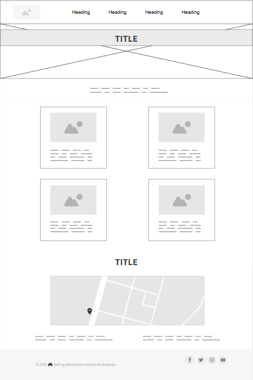

Site Name
Sabores de Venezuela (Flavors of Venezuela)
I chose this name because it clearly communicates the website's purpose - showcasing Venezuelan flavors and cuisine. "Sabores" (flavors) is a warm, inviting term that appeals to food enthusiasts, while "Venezuela" clearly identifies the cultural focus.
Site Purpose
The website serves as a comprehensive digital hub for Venezuelan culinary heritage, providing:
- Authentic traditional recipes with step-by-step instructions
- Interactive regional cuisine explorer showcasing Venezuela's diverse food culture
- Cooking tools including measurement converters and timers
- Cultural context and history behind traditional dishes
- User interaction features for recipe ratings and favorites
Scenarios
These questions represent typical visitor inquiries that the website will address:
Scenario 1: The Home Cook
Question: "I want to make authentic arepas for my family dinner. Where can I find a reliable recipe with proper measurements and cooking instructions?"
Website Response: The recipe section provides detailed instructions with measurement converters, step-by-step photos, and user ratings to ensure recipe reliability.
Scenario 2: The Cultural Explorer
Question: "What are the regional food specialties from different parts of Venezuela, and how do they reflect local culture and ingredients?"
Website Response: The regional explorer features an interactive map with cultural background, ingredient sourcing information, and regional recipe collections.
Scenario 3: The Venezuelan Expat
Question: "I live abroad and want to introduce my friends to Venezuelan food. Which dishes are most representative and accessible for beginners?"
Website Response: The website includes difficulty filters, ingredient substitution guides, and curated collections for different experience levels.
Color Schema
The color palette combines modern minimalism with warm Venezuelan accents:
#FFD166
Accents, buttons, highlights
#FF9B71
Interactive elements, CTAs
#2F2F2F
Headings, primary text
#FFFFFF
Background, navigation
#F5F5F5
Secondary background, cards
Typography
The font selection combines modern readability with clean sophistication:
This clean, modern sans-serif font provides excellent readability and pairs well with Inter
This highly readable sans-serif ensures excellent readability and modern aesthetic
Wireframe
Basic layout sketches for the homepage:
Mobile View Structure:
- Clean white navigation bar with hamburger menu
- Full-width hero image with overlay text
- Stacked recipe cards in single column
- Simple footer with social links
Desktop View Structure:
- Horizontal white navigation with logo and menu items
- Hero section with call-to-action buttons
- Grid layout for recipe cards (3-4 columns)
- Featured sections with alternating layouts
- Expanded footer with multiple columns
